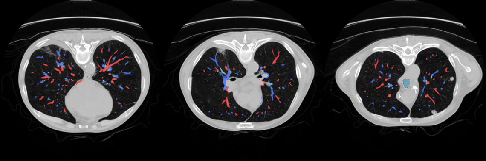

Imagen médica · IA · 3D · Realidad extendida
De la resonancia y el TAC a una anatomía que se imprime, se recorre en realidad virtual y se superpone en realidad aumentada.
Presenta
[Nombre y apellidos]
Centro · Tutor/a
[Centro] · [Tutor/a]
01 · El problema
Para operar o explicar una lesión hace falta la anatomía en 3D. Hoy eso es trabajo manual de especialista.
Delimitar órgano a órgano, corte a corte, con herramientas que exigen formación.
Visor, segmentación, mallas, impresora y realidad virtual van por separado.
Las imágenes de pacientes no deberían salir del centro para procesarse.
02 · La solución
Del archivo DICOM al modelo 3D, sin que el usuario sepa de segmentación.
01 · Entrada
Estudio DICOM — RM, TAC o radiografía, anonimizado
02 · Inteligencia artificial
Segmentación — órganos, huesos, vasos, tejidos y hallazgos
03 · Geometría
Mallas 3D lisas, cerradas y fieles al borde real
04 · Salida
Impresión · RV · RA · informe
03 · Arquitectura
Motor · Python · ≈ 37 000 líneas
SimpleITK, SciPy, PyTorch, scikit-image y trimesh. En GPU NVIDIA si la hay.
Interfaz · Web · ≈ 14 000 líneas
Three.js y WebXR: visor 3D y de cortes, editor de segmentaciones y laboratorio virtual.
Gafas · Unity / C#
Realidad aumentada nativa, emparejada con el PC.
Redes: TotalSegmentator (117 estructuras en TAC) · SynthSeg · HD‑BET · MRSegmentator · nnInteractive · UNet++ para tumores
04 · IA con controles

Arterias pulmonares
Venas pulmonares
Vía aérea
05 · Impresión 3D
0
piezas
0
de altura
0
de PLA
Ejemplo real: cerebro de una RM T1 · análisis completo en 5–7 minutos
06 · Realidad virtual y aumentada
Realidad virtual · WebXR
Varias personas en la misma sala, con Meta Quest 3 o SteamVR, sin instalar nada en las gafas.
Realidad aumentada · Unity
Una red de detección propia, entrenada con imágenes sintéticas, localiza la pieza y le superpone la anatomía.
0
imágenes/s en Quest 3 · objetivo 90
07 · Ingeniería
0
local: las imágenes nunca salen del equipo
0
pruebas automáticas en cada versión
0
firman cada actualización; el instalador las comprueba
0
más rápida la búsqueda de hallazgos en un TAC de 70 cm, mismo resultado
En minutos y sin salir del hospital. Próximo paso: validación con [servicio / hospital] frente a la segmentación manual de expertos.